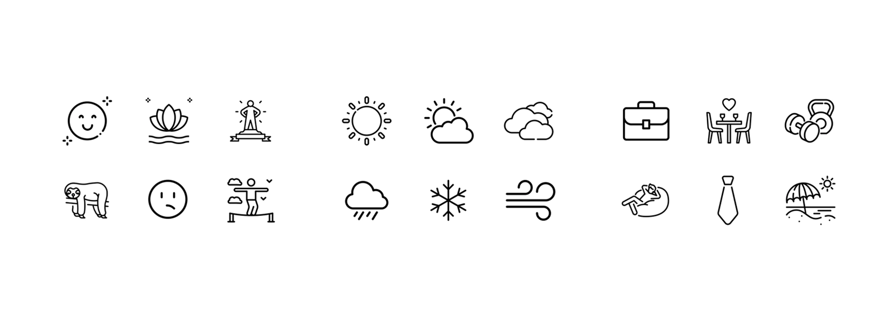

The navigation bar and icons use line-style icons to convey a simple design concept and reduce visual distractions.
The buttons and controls use the brand's primary color #066051 and shades of the same color, maintaining the brand's visual consistency.
The clothing image selections are based on male users, featuring a variety of outfit styles to ensure a broad range of options.